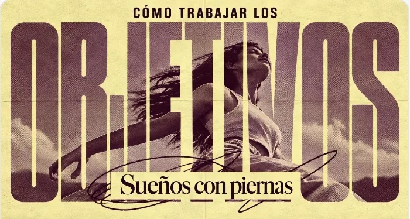
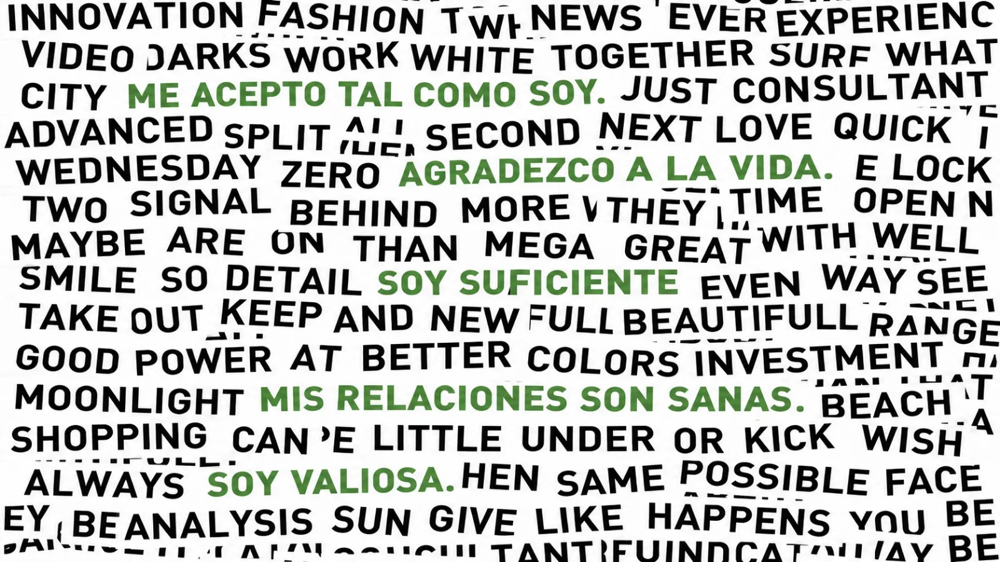

Objetivos para el 2027
Los objetivos son sueños con piernas. Por qué finales de año es el mejor momento para plantear tus metas para 2027 y cómo hacerlo con el método SMART+H.
Blog
Este es un espacio para detenernos a pensar. Aquí comparto reflexiones sobre lo que veo cada día en mi trabajo con las personas: el estrés que se confunde con compromiso, la autoestima que depende del rendimiento y los cambios que asustan aunque los deseemos. No encontrarás fórmulas rápidas, sino ideas para mirarte con más honestidad, comprender lo que te pasa y elegir cómo quieres vivir.

Los objetivos son sueños con piernas. Por qué finales de año es el mejor momento para plantear tus metas para 2027 y cómo hacerlo con el método SMART+H.

La inteligencia emocional mejora nuestras relaciones y nuestra forma de liderar, decidir y vivir con equilibrio. Aquí tienes 7 claves prácticas para empezar a fortalecerla hoy.

El lenguaje no solo describe la realidad: la construye. Las palabras pueden ser puentes que nos conectan o muros que nos separan.

Un taller puntual no transforma a un líder. La continuidad y la personalización son las que convierten las nuevas competencias en hábitos sostenibles.

Las personas ya no siguen a quien tiene el cargo, sino a quien inspira de verdad. Estas son las 6 cualidades que marcan la diferencia entre un jefe y un verdadero líder.

La autoestima no es un lujo emocional, sino una necesidad básica. Influye en cómo nos relacionamos, cómo decidimos y, sobre todo, en cómo nos tratamos a nosotros mismos.

Decir “no” es una de las habilidades más poderosas y también una de las más difíciles. Aprender a hacerlo no es rechazar al otro, sino afirmarnos a nosotros mismos.
Vivimos en una época que premia la velocidad, pero casi nadie se pregunta cómo está de verdad. Parar para escucharte no es rendirse: es recuperar el mando y elegir cómo quieres vivir.